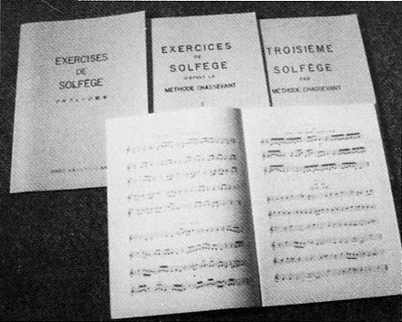
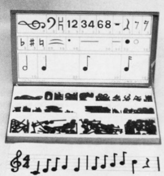

創立60周年となった 2021年、計らずもコロナ禍の影響を受け続ける中で、ソルフェージスクールはそれまで以上にその在り方や音楽教育の意義に向き合うこととなりました。そして、この節目の年に
「ソルフェージスクールの円滑な事業運営継続」のためのご寄付をお願いいたしました。
みなさまからの暖かいご寄付を元に、音楽を楽しみながら身につけ、アンサンブル演奏を体験して協調性のある豊かな心を育てるという
ソルフェージスクールならではの音楽教育を多くの方に披露する演奏会を目指し、2022年6月26日（日）
に日本橋公会堂にて創立60周年記念演奏会を開催することができました。
また、ソルフェージスクールでの学びの大切な友であり、大事な片腕であるスタインウェイのグランドピアノを、創立60周年を機にしっかりと修繕をすることもできました。今後も長く活用して音楽教育のレベルアップを図りたいと考えております。
多くのご寄付を誠に有難うございました。
ソルフェージスクール独自の音楽教育活動の普及に努め、良質な音楽教育を継続発展させて公益財
団法人としての社会的役割を果たすことで、みなさまへの還元となりますよう一層精進してまいります。
ソルフェージスクールの事業運営を円滑に進めるために、みなさまのお力添えを賜りますよう、引続きよろしくお願いいたします。
公益財団法人ソルフェージスクール
〒171 - 0031 東京都豊島区目白 4 - 23 - 10
TEL: 03 - 3953 - 8517
寄付及び賛助会申込書 [PDF]・・・FAX：03 - 3953 - 8517
お手数ですが印刷・記入したものをFAXでお送りください。
寄付趣意書
寄付及び賛助会の趣旨
当財団は社会教育財団として、楽譜の正しい理解を基本とする音楽基礎教育を広く普及することにより、音楽芸術が多くの人びとにとって生涯の心の糧になることを目標に事業を行っています。こうした教育の一層の充実を図るため、経済基盤を強化する目的でご寄付（寄付金及び賛助会費）を運用いたします。
*随時受付
※2000 円を超える金額のご寄付は寄付金控除の対象となります
（詳細は下記をご参照ください）
*入会随時：年会費制
個人会員・１口 ¥5,000
法人会員・１口 ¥50,000
特典
・年間活動報告「ソルフェージスクールNEWSLETTER」を配布
・ソルフェージスクールの主催する各種演奏会・講習会等の入場・参加料の割引
・ご入金いただいた日から1年間の適用とさせていただきます
ご入金方法
「寄付申込書」にご記入いただき、次の ①②③ いずれかの方法でご提出ください。
① FAX：03 - 3953 - 8517
② Mail：sol.music@dream.jp （PDFまたは写真でも結構です）
③ ソルフェージスクール窓口
「寄付申込書」の内容をもとに「 寄付金控除証明書 」の作成をいたしますので、必ずご提出ください 。
※2,000 円を超える金額が寄付金控除対象となります
下記の いずれかの方法でご入金ください。
| ＜払込取扱票による送金＞ | ＜ゆうちょ銀行口座へ振込＞ |
| 払込場所 ゆうちょ銀行（郵便局）
口座記号 ００１５０－５ |
＊他金融機関から振込の場合 |
| ＜当財団事務窓口でのお支払い＞ 火～土 13:00～18:00 | |
≪寄付金控除≫について
当財団は、公益財団法人であるため、個人及び法人が寄付された場合には、寄付金控除の優遇措置が受けられます。
＝個人の場合＝
（寄付金額と所得金額の40%のいずれか少ない金額－2,000円）が所得税の課税所得から控除されます。
- 優遇を受けるためには確定申告が必要です。
- なお、一部の地域の方は、住民税の控除（注）も受けられます。 対象の地域は都道府県、市区町村の条例で指定された場合となりますので、お住まいの都道府県、市区町村にお問合せください。
＝法人の場合＝
一般の寄付金とは別に、以下を限度として損金算入されます。
（所得等の金額の 5％＋資本金の金額 × 0.25％）× 1/2
- たとえば、当該事業年度の一般寄付金の枠が50だとすれば、別枠で同額の50が認められます。ただし、一般枠で余裕があるからと言ってそれを流用することはできません。
- 住民税・事業税は上記法人税の取り扱いを受けて計算されます。
*****************
※確定申告に際しては、次のものが必要となります。- 当財団が発行した領収書
- （注）住民税控除の場合は公益財団法人証明書の写し
※サポートしていただいた方には当財団からお送りいたします。
※税金の詳細は、お近くの税務署・税務相談室にお問い合わせください。
ソルフェージスクールの紹介
ソルフェージスクールは、公益財団法人ソルフェージスクールが運営する音楽教室です。
1961 年に市ヶ谷の山脇服飾美術学院のご好意により一室を借りて「ソルフェージ教室」として開校、1967 年に現在
の場所である目白へ移転し「ソルフェージスクール」へ改称しました。創設から今日に至るまで、幼児から大人までプロ
アマを問わず音楽を楽しく学びたい人々のために、音楽の高い芸術性を極め研究し、豊かな感性を育み続けております。
創設者の大村多喜子先生は 1916 年北海道に産まれ、東京女子大学英語専攻科在籍中にアメリカへ留学、ジュリアード
音楽院にてハンス・レッツに師事しヴァイオリンを学びました。そののち、日本を代表する建築家である吉村順三氏と結
婚し、再度ジュリアード音楽院へ留学。帰国後はリサイタルを重ね、やがてソルフェージ・個人レッスン・アンサンブル
クラスを三本柱とした音楽指導をはじめるに至ります。
ソルフェージスクールの設計は、吉村順三氏が手掛けました。音楽教育の場であるとともに歴史的に貴重な建築物でも
あり、特に３階のホールは音楽の美しさがそのまま建築という姿になったような美しい佇まいを見せています。全周に配
置された窓からは陽の光が明るく差し込み、高い天井はとても開放的で、音の響きもたいへん素晴らしい構造となってい
ます。約 60 畳という面積の広さと 2 台のグランドピアノを備えたホールを持っている音楽教室は大変珍しく、後述する
ソルフェージスクールの独自の教育と並んでソルフェージスクールの大きな特徴の一つといっても過言ではないでしょう。
ここで小さな子供達が自由にのびのびと動き、リズムをとって歌い、音楽を楽しみながら身につける（＝音楽をする）
…その生き生きとした様子を目にするたび、私達はソルフェージスクール創設者 大村多喜子先生の精神が今も生き続けて
いることを感じます。そしてその音楽教育の理念をこれからも守り伝えていくことが使命であると考えています。
私達は、大村多喜子先生そして吉村順三先生の、音楽を愛する温かな心から生まれたこの場所を、これからも大切に使
い守り続けていきたいと考えております。
ソルフェージスクール独自の教育方法はこうして生まれました
吉村順三先生はアメリカの建築家 Antonin Raymond 氏に師事していました。その Antonin Raymond 氏のご夫人で
ある Noemi さんは音楽に造詣が深く、子供の頃に受けた音楽教育の教本をずっと大切に保管されていました。ソルフェ
ージスクール創設前、音楽の基礎を教える学校を作りたいと考えていた大村多喜子先生はその熱い思いを Mrs.Raymond
に話したのでしょう。Mrs.RaymondはMarie Chassevantという教育者によるその教本「SOLFÈGE DE L'ENFANT」
(1880 年出版)を、多喜子先生に託してくださったのです。（Marie Chassevant は教育者としてアメリカでもヨーロッパ
でも著名な人物です）。
その教本は大変に素晴らしいものであったため、多喜子先生をはじめとするソルフェージスクール創設メンバーはそれ
を独自に編纂し、ソルフェージスクールで使用することにしました。それが現在のスクールでも使用している
Chassevant （I, II, III）です。Mrs.Raymond が小さいときに受けた素晴らしい音楽教育の礎を、ソルフェージスクール
が受け継ぎ今でも生き生きと伝えているということは、まさに奇跡的なことです。
またソルフェージスクールでは、オリジナルの教材「ソルフェージェット」を使用していますが、これも Mrs.Raymond
が音楽を学んだ時に使っていた教材のお話が基になっています。当時その現物はなかったため、吉村順三先生が彼女の記
憶を辿ってデザインして作りました。
…実は今、インターネットで検索すると、Mrs.Raymondが使っていたと思われる教材（いわば「ソルフェージェット」のオリジナル）の画像が出てくるのですが、「ソルフェージェット」とそっくりでとても驚きます。
|  |  |
| 左: 現在もスクールで使用しているソルフェージ教本 |
右: ソルフェージェット |
吉村順三先生がソルフェージェットを作ったのは1960年代。もちろんインターネットなどはなく、Mrs.Raymondのお話だけを頼りに作った教材が、Mrs.Raymondが実際に使っていたものとそっくりだとは、連想ゲームがとてもうまくいったようですね。
ソルフェージスクールのスタインウェイピアノについて
ソルフェージスクール3階のホールには、2台のグランドピアノが設置してあります。そのうちの1台、スタインウェイ。世界中のコンサートホールで使われ、多くのピアニストから絶大な人気を誇る世界最高峰のピアノとして知られています。
普段のスクールではカバーをかけ大切に保管していますが、発表会やコンサートなど大切なシーンで活躍してきました。しかし、ソルフェージスクールにやってきて以来40年近くが経過し、残念ながら時の経過に抗えない不具合も重なっています。今回、専門家の方に調査をしていただき、共鳴板のヒビ補修や多数箇所のパーツ交換など、大規模な修繕が必要であることが分かりました。今後も長く大切に弾き続けていくために、ソルフェージスクールでの学びのために、今しっかりと修繕をしておく必要があります。
スタインウェイの修繕に関しては、約350万円の費用がかかります。今、同ランクのピアノは新品で約2000万円、中古でも1,000万円の価値があるそうです。ソルフェージスクールのピアノも、修理をすることでその1,000万円の価値を今後も維持することが可能になります。
今回皆様にお力添えいただく寄付金をもとにピアノを生まれ変わらせ、これからも末永くソルフェージスクール独自の音楽教育活動の普及につとめてまいりたいと思います。未来の音楽教育を明るくすることが私達の社会的役割であり、ソルフェージスクールの益々の前進のためにも、何卒お力添えを賜りますよう宜しくお願いいたします。
ソルフェージスクールのスタインウェイはこんなピアノです
♪ 現代では珍しい艶消し塗装仕上げのコンサートピアノ
スタインウェイのフルコンサートピアノには、艶出し塗装仕上げのものと艶消し塗装仕上げのものがあります。現在通常販売されているフルコンサートピアノは全て黒色艶出塗装仕上げのピアノとなっていますが、今から数十年前までは、日本では長い間艶消し塗装仕上げのピアノが販売されていました。（また、木材の質については当時のものの方が良く、修繕して状態を維持する価値は十分にあるそうです。）
ソルフェージスクールにあるスタインウェイは1983年に縁あって神戸からやってきた、艶消し塗装仕上げのもの。光沢を抑えた静謐な佇まいは、スクールの雰囲気に寄り添ってくれているかのようです。
♪ セミコンサートグランドピアノ「C-227」モデル
ソルフェージスクールのスタインウェイは「C-227」というモデルのもので、同じくスタインウェイのD-274モデルとともにコンサートピアノの最高峰と謳われています。大ホールでのフルコンサートに使用されるDモデルに対し、Cモデルは中・小規模のホールに向いており、透明感溢れる高音から深く包み込まれるような低音まで、多彩な響きが特徴的で、迫力あるフォルテも繊細なピアニシモも美しく奏でることができます。